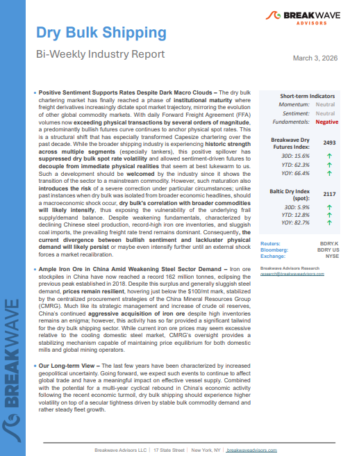
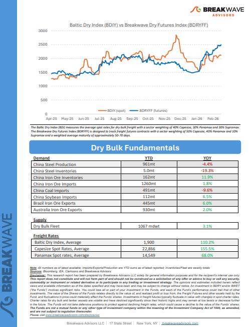
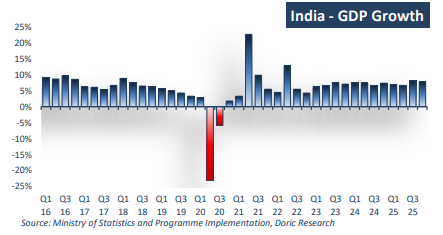
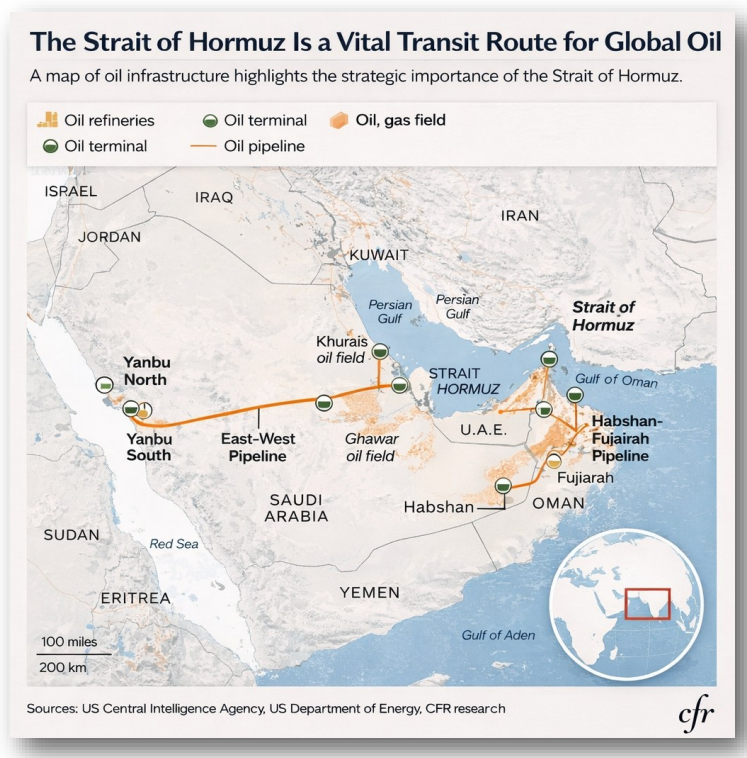
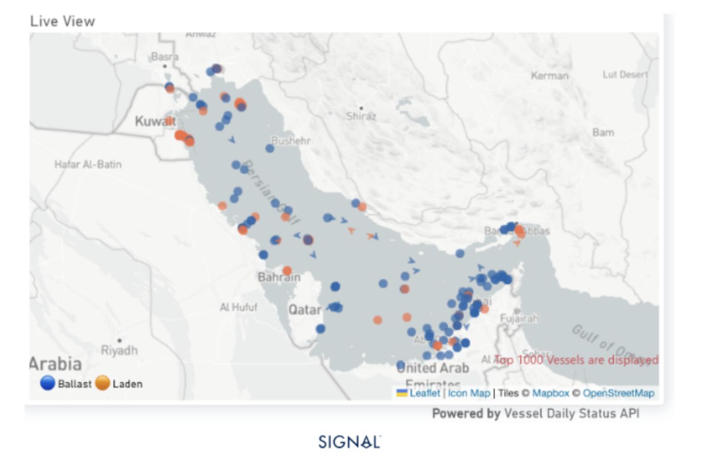

As the week comes to a close, take a moment to review the key insights from the past few days. Missed something? We've gathered all the top insights for you to catch up at your convenience.
Positive Sentiment Supports Rates Despite Dark Macro Clouds– The dry bulk chartering market has finally reached a phase ofinstitutional maturitywhere freight derivatives increasingly dictate spot market trajectory, mirroring the evolution of other global commodity markets.



Two years ago, Doric Weekly Insight opened on a distinctly euphoric note, observing that the dry bulk market had concluded February at 2,111 points – a level last recorded during the same trading window in 2010.
Doric Weekly Market Insights
VLCC asset prices at decade highs: 5Y units >$120m (+17% YoY); 10Y units >$100m (+20% YoY).
Signal Ocean Tanker Weekly Market Monitor
As we discussed in Commodore Research's most recent Weekly Executive Report, India is on pace to produce 116.7 billion kilowatt hours of electricity this month.
From Commodore's Weekly Dry Bulk Reports
The crude tanker tape has shifted from strong to structurally tight in a matter of weeks.
Xclusiv Shipbrokers Weekly Report
Russian oil arrivals to India to sustain amid new tariffs from the US and current Middle East conflict. This will lower demand for mainstream crude.
Vortexa Freight Weekly

As of 3 March 2026: Transit counts, casualty figures, and insurance notices are time-sensitive and subject to rapid revision.
Allied Weekly Report
The latest escalation in the Gulf has triggered one of the most extreme short-term reactions the tanker market has seen in years.
Intermodal Weekly Market Report
China continues to fill its iron ore stocks as Simandou export starts to climb, and the wet season in Brazil limits export growth
Signal Ocean Commodity Radar
As we have discussed at length in Commodore Research's Weekly Executive Reports, there were large portions of 2024 and 2025 with sustained industrial weakness in the global economy
From Commodore's Weekly Dry Bulk Reports

The Strait of Hormuz is the most important waypoint for vessels destined for the Arabian Gulf, as the largest discharge ports are located on the western side.
Signal Ocean Market Insights
As crude flows through Hormuz are almost at a standstill, we try to explore what are the alternatives and how realistic it is to divert flows to them
Vortexa Freight Weekly
The sustained tensions since Saturday continue to diminish the prospects for de-escalation.
Signal Ocean Market Insights